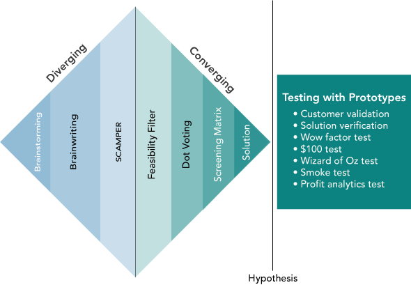

10 Test Solutions with Prototypes
Using the scientific method to determine when the solution is aligned with customers and profitable to launch
Testing Solutions
Developing a solution is just one milestone in the innovation journey. The real challenge lies in validating this solution - a process that unfolds through a sequence of prototype testing. Unlike a one-off test, this entails a series of progressively complex and costly experiments. Each stage of this validation journey is designed to incrementally align your solution more closely with your customer’s pain points and expectations.
Validating a solution is a nuanced balancing act. It requires ensuring that your solution not only addresses the identified customer pains but is also technically feasible and economically viable. Each prototype test acts as a pivotal moment, providing crucial feedback and insights. This feedback is instrumental in making necessary adjustments and enhancements to your solution.
For entrepreneurs, this iterative process of testing and refining is indispensable. It’s the bridge that turns abstract ideas into concrete, market-ready products. It significantly lowers the risk of market failure and heightens the chances of creating a solution that genuinely resonates with customer needs. This chapter delves into the various stages of prototype testing. It highlights the pivotal role of customer feedback and outlines practical strategies for refining your solution.

Testing with Prototypes
In the innovation process, prototyping is often viewed as an end in itself, a stepping stone towards the finished product. However, this perspective can be misleading. Prototypes should not be the destination but the means to navigate through the innovation journey. Their true value lies in helping resolve uncertainties at each stage of development. The choice of prototype should be driven by your current knowledge, the uncertainties that remain, your hypotheses, and the specific aspects you need to test. Throughout this journey, the nature of prototypes evolves, aligning with the changing demands of the innovation process.
Innovation requires a variety of tests to converge towards a successful solution. Each test type targets different aspects of the product and its market fit. It’s essential to select the right test based on the current stage of development and the specific unknowns you need to address.
Validation Testing
Validation testing, which we have previously seen in the context of customer pain, is essential to confirm that the solution effectively addresses the customer’s needs. This form of testing delves into understanding and confirming aspects like customer identity, pain points, and the effectiveness of the proposed solution. Validation testing seeks to answer questions such as:
- Who exactly is the customer?
- What are the specific pain points of the customer?
- Does the proposed solution effectively alleviate these pain points?
Verification Testing
Verification testing, on the other hand, focuses on the technical feasibility and functionality of the solution. This type of testing involves creating progressively advanced prototypes to determine if the solution can be built and how. Key questions addressed in verification testing include:
- What features and functionalities should the solution possess?
- Is the solution technically feasible to build?
- What is the optimal approach to constructing the solution?
Verification testing embodies the traditional notion of prototyping, where each iteration brings you closer to understanding the technicalities and feasibilities of your solution. Unlike validation testing, which is more customer-centric, verification testing is about the internal capabilities and technical aspects of the innovation.
Wow Factor Testing
The “Wow Factor Test” is a critical validation tool that gauges the emotional connection and appeal of your innovation to potential customers.1 This test helps you understand not just the acceptance but the excitement generated by your product. It involves directly interacting with your target audience to gather their candid reactions and insights.
Conducting the Wow Factor Test
To effectively conduct a Wow Factor Test, follow these steps:
Presentation: Introduce the innovation to potential customers, clearly explaining its intended purpose and functionality. This step sets the stage for informed feedback.
Emotional Connection Assessment: Ask the customers to rate their emotional connection to the innovation on a scale of 1 to 10, where 1 signifies a poor concept and 10 indicates a concept that elicits a ‘wow’ response.
Positive Feedback Collection: Seek specific feedback on what aspects of the innovation customers find appealing. Questions could include:
- “What aspects of this product idea appeal to you?”
- “What benefits do you foresee in using this product?”
- “In what situations would you see yourself using this product?”
Negative Feedback Collection: Inquire about any reservations or dislikes regarding the innovation. Ask questions like:
- “What elements of this product idea do you dislike?”
- “Are there any shortcomings or deficiencies you perceive?”
- “What could be potential barriers or reasons for not purchasing this product?”
Improvement Engagement: Actively involve the customers in the ideation process for improvement. Questions might include:
- “How could we enhance this product?”
- “What modifications would make you more likely to purchase it?”
Group Summary: Conclude the session by summarizing the key points. This could involve asking the group to reflect on the major learnings and takeaways from the discussion.
Assessing the Wow Factor
The average ‘wow factor’ score needed for a product to be considered promising is typically around 7.5. This threshold indicates a strong emotional connection and potential market success. However, it’s essential to remember that this is a general guideline, and the context of your specific market and customer base might necessitate a different threshold.
Through Wow Factor Testing, you gain valuable insights into the emotional resonance of your product, a crucial aspect often overlooked in technical feasibility studies. This process ensures that your product not only meets the functional requirements but also creates a meaningful connection with your target audience.
$100 Test
The “$100 Test” is an effective technique for identifying the most valued features of your product from the customer’s perspective. This test is particularly useful in discerning the Minimum Viable Product (MVP) and avoiding feature creep, ensuring that the product remains focused on what the customer truly wants.2
Conducting the $100 Test
To execute the $100 Test, follow these steps:
Pain and Solution Explanation: Present the hypothesized customer pain and your proposed solution, either in person or through a survey. Emphasize the importance of their input in refining the solution.
Feature Listing: Provide a comprehensive list of potential features that could be included in the product. This list should be extensive and cover various aspects of functionality, design, and user experience.
Hypothetical Investment: Ask customers to allocate a hypothetical budget of $100 across these features, investing more in the features they value the most. This exercise forces customers to prioritize features based on their perceived importance and utility.
Feature Prioritization: Analyze the allocation of funds across different features to identify the most valued ones. This data will guide you in trimming down the feature list to those that are essential from the customer’s perspective.
Analyzing the Results
Upon completion of the test, you’ll likely observe a trend where certain features consistently receive higher investments from customers. These are the features that hold the most value and should be prioritized in the MVP.
Be aware that different customer segments might value different features. If such segmentation emerges, it may indicate varying pain points or preferences among your customer base. This insight can be valuable in further refining your understanding of the customer and tailoring your product accordingly.
The $100 Test is a powerful tool in the solution validation process. It helps in focusing development efforts on what matters most to your customers, avoiding unnecessary complexity, and ensuring that your solution remains aligned with customer needs.
Wizard of Oz Test
The “Wizard of Oz Test” is an innovative approach to prototype testing that involves creating an illusion of a fully functional product, where the behind-the-scenes manual operations are hidden from the user.3 It allows innovators to test and refine the concept of a product before its actual technical development.
Implementing the Wizard of Oz Test
Creating the Illusion: Develop a basic prototype or a presentation that simulates the product’s functionality. This could be as simple as a PowerPoint animation or a mock-up interface.
Manual Operation: The test requires manual input behind the scenes to simulate the product’s functions. This could involve a team member entering data, manipulating the prototype, or otherwise creating the impression of a working product.
Customer Interaction: Present the prototype to potential customers and observe their interaction with it. Encourage them to use it as they would a fully functional product.
Feedback Collection: Collect feedback on the product’s concept, usability, and perceived value. Pay close attention to how users interact with the prototype and any difficulties or confusion they encounter.
Adapting to User Input: Be prepared for scenarios where users go off-script or try unexpected actions. These instances can be particularly revealing and guide future development.
Example: Innovating for Rock Climbers
Consider the case of a team developing a social media tool for rock climbers. They hypothesized various performance metrics that might interest climbers. After receiving feedback on conceptual and rough prototypes, they decided to focus on a device that could monitor climbing speed and altitude.
During the Wizard of Oz test, climbers were given a prototype that seemed to record their climbing data. In reality, a team member manually recorded the data, which was then shown to the climbers post-climb. This test revealed climbers’ interest in data comparing their performance over time and against others, while services for finding new locations were less valued.
The Wizard of Oz Test is a powerful tool in the early stages of product development. It offers an opportunity to validate a product’s concept and functionality with minimal investment in technology development. By focusing on user interaction and feedback, this method can significantly inform and refine the final product design.
Smoke Testing
Smoke Testing is a critical step in the validation process that provides valuable insights from actual customers. Unlike previous tests that rely on potential customer feedback, smoke testing focuses on real customer behavior, offering a more accurate picture of market reception.
This method employs a “looks-like” prototype, which customers encounter online as if it were a finished product. The goal is to observe and analyze real customer interactions, providing insights that potential customer feedback alone cannot offer.
Implementing Smoke Testing
Creating a Convincing Prototype: Develop a prototype that convincingly represents the final product. This prototype should be polished enough to pass as a market-ready solution.
Building a Landing Page: Design a landing page that mirrors a real product page. This page should be crafted to test hypotheses about customer preferences, including their likelihood of purchasing.
Setting Up Conversion Tracking: Implement tools to track customer interactions and conversions on the landing page. This data will provide insights into customer behavior and preferences.
Running Targeted Ads: Use platforms like Facebook to run an advertising campaign aimed at your target customer segment. The ads should direct potential customers to the landing page.
Analyzing Customer Behavior: Utilize web analytics to study customer interactions with your ads and the landing page. Pay close attention to click patterns, browsing behavior, and conversion rates.
Challenges and Considerations
Prototype Convincingness: The prototype must be credible enough for customers to believe in its functionality, or they may disengage.
Relevance of Online Presence: Smoke testing is more effective for products where customers typically seek solutions online. It may not be as informative for products traditionally discovered through other channels, like medical devices.
Evolving Nature of the Test: The specifics of smoke testing, particularly in digital marketing and analytics, are constantly evolving. Staying updated with current best practices is crucial for effective testing.
Smoke testing is a powerful tool for gaining in-depth insights into customer preferences and behaviors. It bridges the gap between hypothetical customer feedback and real market reactions, making it an indispensable part of the solution validation process. However, its success hinges on the quality of the prototype, the effectiveness of the landing page and advertising campaign, and the correct interpretation of analytics data.
Profit Analytics Testing
Profitability Analytics Testing is focused on assessing the financial viability of your solution. This test measures the customer’s perceived value of the solution, reflected in their willingness to pay. A well-understood customer pain, addressed with an effective solution, typically leads to higher customer valuation.
Concept of Profitability Testing
Understanding Customer Valuation: The core of profitability testing lies in evaluating how much customers are willing to pay for your solution. The farther the solution is from effectively addressing the customer’s pain, the less they are willing to pay.
Demand Curve Estimation: A key tool in this test is the demand curve, which charts the relationship between price and quantity demanded. It serves as an indicator of how much customers value the product. Unlike established firms, innovators often find it easier to estimate the demand curve for a new product.
Calculating Profit Function: Once the demand curve is established (e.g., \(\mathsf{Q = 100 - 2P}\)), the next step is to calculate the profit function, \(\mathsf{\pi = (P-c)Q - f}\). Here, \(\mathsf{Q}\) is the quantity demanded, \(\mathsf{P}\) is the price, \(\mathsf{c}\) is the unit variable cost, and \(\mathsf{f}\) is the fixed cost.
Maximizing Profit: The objective is to find the price point that maximizes profit, utilizing methods like calculus, simulation, or optimization. This price point reveals the highest potential profit from the innovation.
Decision Making Based on Profitability Testing
Interpreting Results: If the expected profit is low or negative, it suggests that the innovation may not be financially viable and reconsideration or abandonment might be wise.
Positive Outlook: Conversely, a high expected profit indicates a strong market potential, justifying further investment and market entry.
Detailed Analysis: For a comprehensive guide to estimating demand curves and detailed profitability analysis, refer to the book Hatchet or Hatch It: Making Launch Decisions from Profit Analytics Evidence.
Profit Analytics Testing stands as a critical final validation step, combining financial analysis with customer value perception. It moves beyond theoretical customer feedback, grounding the innovation’s potential success in tangible economic terms. This testing phase helps entrepreneurs make informed decisions about market entry, backed by a clear understanding of the innovation’s financial prospects.
Prototypes and Prototyping
Prototyping serves as a vital tool in innovation, not as an end goal but as a means to conduct essential tests. It’s the iterative process of creating prototypes that aids in unraveling uncertainties and refining the solution.
The Role of Prototypes in Testing
Prototyping as a Vehicle for Testing: Prototypes are representations created for testing hypotheses. They counteract the premature optimization of solutions by providing a cost-effective means for quick, iterative testing.
Adapting Prototype Fidelity and Cost: Prototypes vary in their resemblance to the final product and in their cost. The key is to choose a prototype that matches the testing needs without incurring unnecessary expenses. For instance, to test if a defibrillator would be noticed in a public space, a simple sign indicating its presence could suffice, rather than a complete, functional unit.
Types of Prototypes
Virtual Prototypes (Drawings): These are initial sketches or computer-generated images representing the solution. They are useful for initial conceptual validation but cannot confirm solution viability or build feasibility.
Rough Prototypes (Cobbled Together Junk): Created with readily available materials, rough prototypes are tangible and allow for early user interaction. Observing customers interact with these prototypes can unveil critical insights about their preferences and pain points.
Rapid Prototypes (Creative Materials): Rapid prototyping technologies like 3D printing and foam core milling offer ways to create more refined prototypes quickly and cost-effectively. These can range from basic looks-like models to more sophisticated works-like prototypes, depending on the stage of innovation and the specific tests required.
Leveraging Prototypes for Customer Insights
Clarifying Pain Points: In the early stages, simple prototypes can help clarify customer pains, offering tangible points of discussion for customers to articulate their needs and dislikes.
Iterative Learning: As the innovation progresses, prototypes should evolve in fidelity, moving from basic sketches to more detailed representations. This progression allows for deeper and more precise customer feedback.
Balancing Fidelity and Cost: The art of prototyping lies in balancing the need for detailed, accurate representation with the constraints of time and budget. Each prototype should be just detailed enough to test the current hypothesis, avoiding over-investment in unnecessary details.
In conclusion, prototyping is a dynamic and essential component of the innovation process. It’s not just about creating a physical representation of an idea but about using that representation as a strategic tool to learn, iterate, and refine. Effective use of prototypes can significantly reduce risks, optimize resource usage, and increase the likelihood of arriving at a solution that genuinely resonates with customer needs.
Conclusion
In concluding this chapter on validating solutions with prototypes, it’s crucial to reemphasize the iterative nature of this process. As highlighted by the double diamond design process, innovation is a journey of building, testing, and iterating. Each stage of prototyping and testing helps in progressively reducing uncertainty and crystallizing the solution.
Matching Tests with Prototypes
- Strategic Choice of Tests and Prototypes: The choice of which test to use and which prototype to employ should align with the specific questions and uncertainties you are addressing. For example, a rough prototype suffices to check if a defibrillator is noticeable, while material testing might require more sophisticated prototypes.
- Iterative Refinement: Through successive rounds of testing and refinement, prototypes evolve, moving from simple representations to more complex and accurate models. This evolution is guided by the feedback obtained and the learning accrued at each stage.
Toward Solution Release
- Transitioning from Innovation to Commercialization: As you resolve uncertainties and refine your solution, the focus gradually shifts from innovation to preparing for market entry. This transition marks the point where you have enough confidence in your solution to consider business model development and commercialization.
- The Journey Ahead: The journey of innovation doesn’t end with the final prototype. It seamlessly leads into the next phase of bringing your solution to the market, where new challenges and opportunities await.
The path from a concept to a market-ready solution is not linear but a series of informed steps, each building upon the learnings of the previous. By carefully selecting your tests and prototypes and adapting them to your evolving understanding of customer needs, you pave the way for a solution that not only addresses the identified pain points but also holds the potential for successful commercialization.
The wow factor test is explained in detail in the work of Swenson, Rhoads, and Whitlark (2013).↩︎
For more detail on the $100 test, see Furr and Ahlstrom (2011).↩︎
The wizard of Oz test is inspired by the classic narrative of L. Frank Baum’s novel The Wonderful Wizard of Oz (Baum 1900).
This sort of testing has also been called the mechanical Turk test. In 1770, Wolfgang von Kempelen presented a chess playing automaton (robot) to Empress Maria Theresa of Austria. Over the years, he would challenge humans to play chess against his machine and the machine usually won. It was eventually revealed that the mechanical Turk was a hoax with a small hiding place for a chess master and a system of mirrors to see the chess board and manipulate the automaton to move the pieces.
Much more recently, Amazon created a crowdsourcing service, also named Mechanical Turk or MTurk, where the public is invited to do tasks that computers cannot easily do. To avoid confusion between the centuries-old automaton and the recent Amazon crowdsourcing service, we now usually adopt the name wizard of Oz test.↩︎